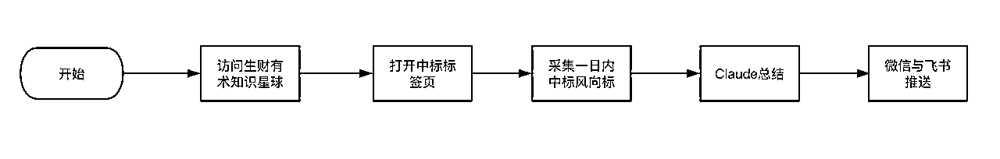
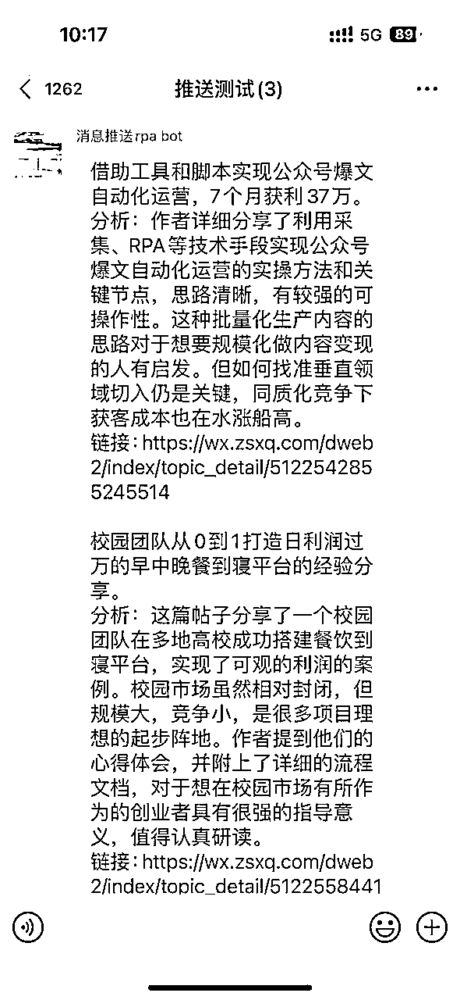
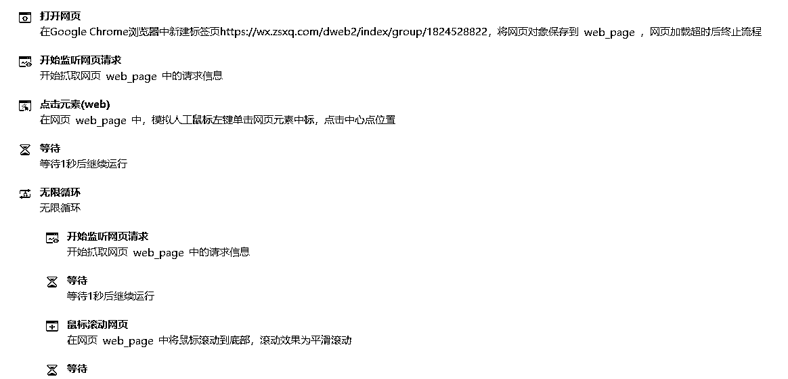

来源：https://ia0969wpr2.feishu.cn/docx/AUFMd8clbopM7GxwnBfc3jqtnRc
前段时间分享了如何使用影刀➕Claude实现风向标和精华帖自动阅读并推送微信和飞书群，原链接在这：
当时做这个自动化流程希望更高效地利用生财资源，告别信息焦虑，每天早上将生财精华内容整理汇总，推送到微信和飞书群。解决的痛点主要是：
之前的流程如下，运行了一段时间之后发现了一些问题，比如亦仁大佬可能并不是每天都会评选精华和风向标，而现在的流程中只会获取当日中标风向标和精华帖进行AI分析后进行无状态推送，这样就会造成内容遗漏，另外每天推送完成后并没有保存数据，也不方便进行回溯，所以趁着周末的机会进行了一波优化：借助飞书多维表格实现数据落表和更高质量的推送。

优化后的主要流程如下：
整体流程拆分为数据采集->AI分析->定时推送三大部分
采集和分析后的多维表格如下，每天早上推送的时候直接从表格中获取未推送的数据就可以了
另外一段时间的测试下来，可以说claude的分析时而非常惊艳，所以趁着这次优化的机会，把最近半年的所有风向标都使用AI分析了一遍，分析后的数据如上，大家可以打开表格详情查看。
表格中还有一个精华表，同样使用影刀采集了半年内的所有精华帖并且使用Claude进行了总结，可以参考。
为了保护生财有术的版权，所有数据中的正文都去掉了原文链接，只有生财有术官方会员才能访问。发布前也征询了鱼丸的意见，鱼丸反馈可以发表~
之前推送：
优化后：

核心实现代码如下：

这套流程的数据采集部分也可以替换为其他数据源，比如推特list、AI新闻采集等，然后借助AI分析后进行推送，利用RPA和AI的力量，打造属于自己的信息获取工作流。